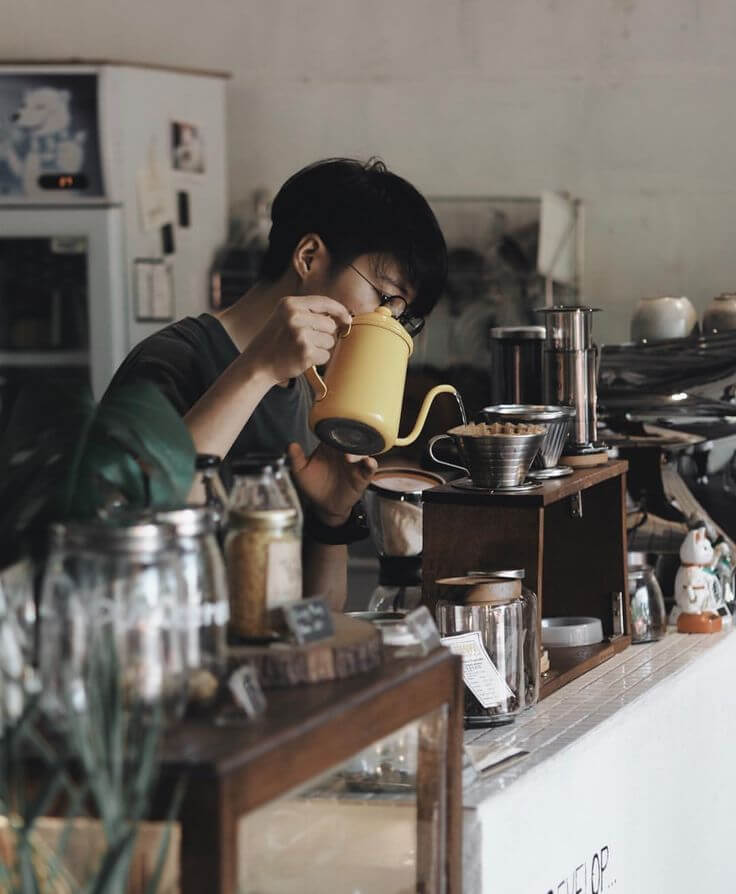

商品相關
我們提供淺、中、深烘等不同烘焙度的咖啡豆，你可以依據個人口味選擇合適的烘焙程度，讓你在家也能享受到專屬的咖啡風味。
由於咖啡豆屬於食品，一經開封恕不接受退貨，但是如遇商品有瑕疵或損壞的情況，我們接受退換貨。請於收到商品後7天內聯絡我們，我們將協助您處理退換貨事宜。
建議將咖啡豆存放於陰涼乾燥處，避免陽光直射並密封保存，這樣可以保持咖啡豆的新鮮度。若希望長時間保存，建議使用真空密封罐。
有的，如果有喜歡的沖煮方式，可以在訂購的時候跟我們說，我們會磨成適合該沖煮方式的咖啡粉粒大小。
店家相關
我們的咖啡豆來自世界各地，每一季我們的咖啡師都會精心評測和挑選，確保為你帶來各種風味層次的咖啡體驗，讓你能品嚐到獨特的咖啡風味表現。
是的，我們提供免費Wi-Fi和多處插座，方便你在咖啡廳內工作或學習。
我們提供外帶服務，且外帶享有九折優惠。雖然目前沒有外送服務，但若你有大量的預訂需求，歡迎聯絡我們！
我們目前沒有提供純素餐點，但在咖啡選擇上，我們提供以燕麥奶取代牛奶的選項。
歡迎攜帶寵物一起來，我們是一間友善寵物的咖啡廳，不過為了維護所有顧客的舒適環境，請確保你的寵物繫上牽繩，避免影響到其他客人。